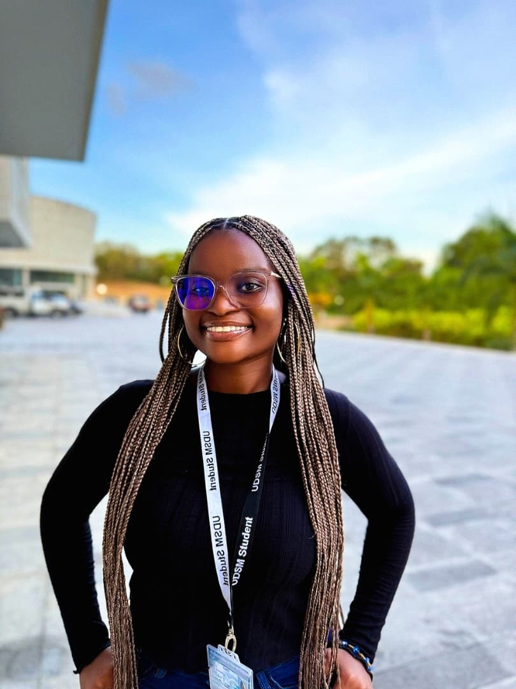
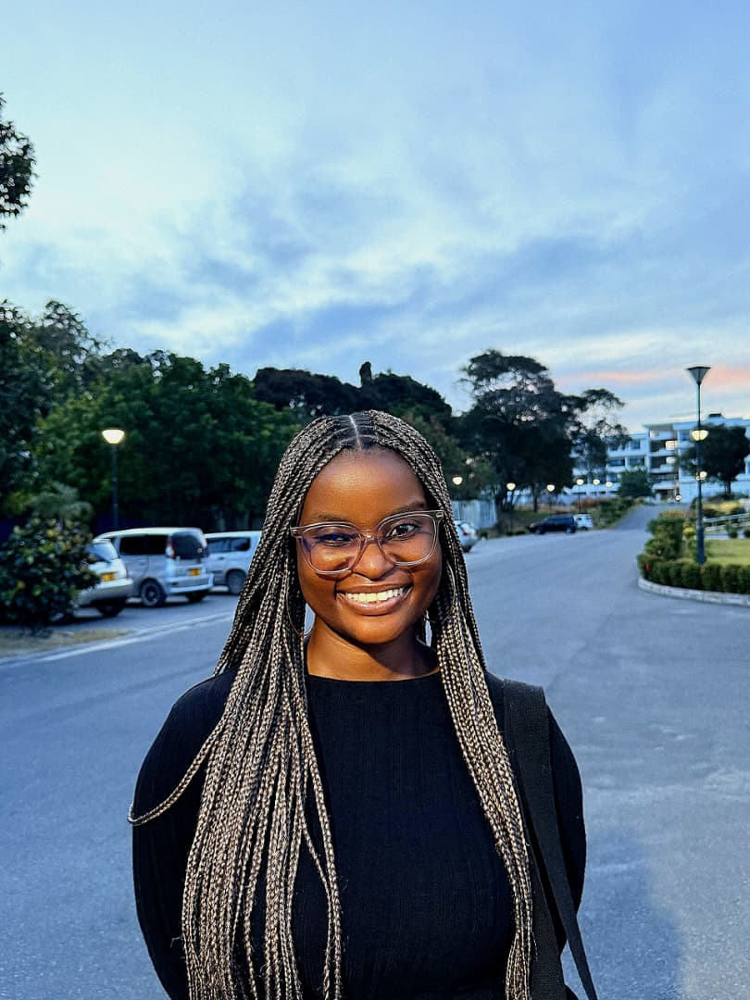

My name is clara Samson kipepe.
I am a Computer Science student at the University of Dar es Salaam,
I am a curious student with a strong interest in technology and personal development.I enjoy learning new skills and applying them
in practical ways,especially in areas related to computing and problem-solving.I am committed to my knowledge and growing both
academically and personally.
Beyond academics,I actively participate in extracurricular activities such as event planning,whwere I contribute to organizing and
coordinating events.My interests include planning events like concerts and large-scale pageants such as Miss World Tanzania,which has
helped me develop teamwork,communication,and leadership skills.
In my free time,I enjoy crotcheting,which allows me to express creativity and attention to detail while creating handmade items./p>
| LEVEL | SCHOOLS | YEARS |
|---|---|---|
| primary | St joseph | 2018 |
| secondary | Maria De Mattias | 2022 |
| Advance | Canossa High school | 2025 |

